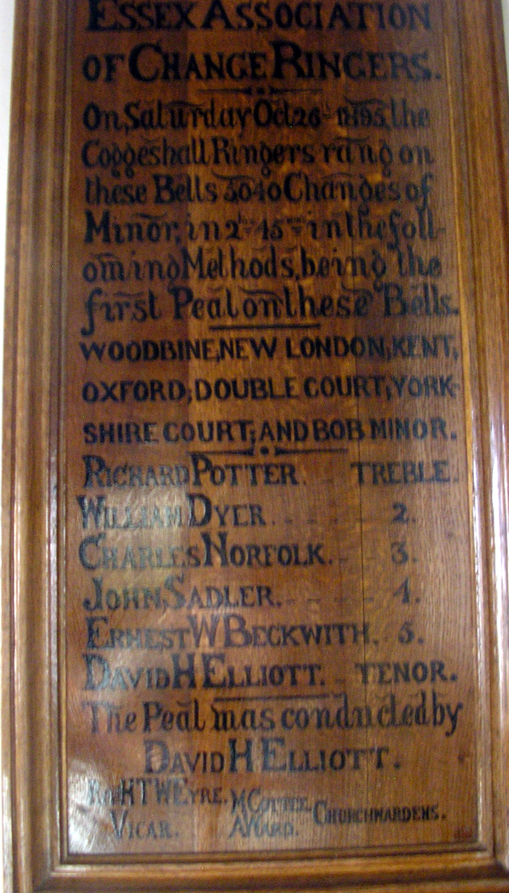
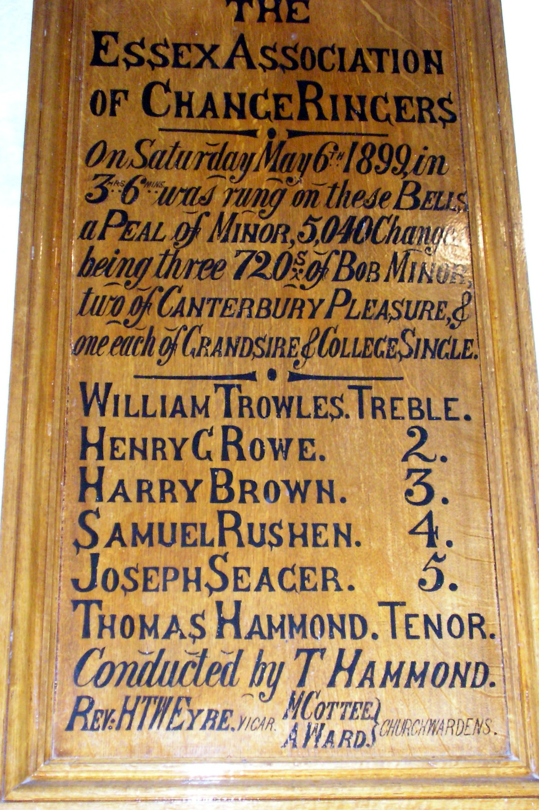
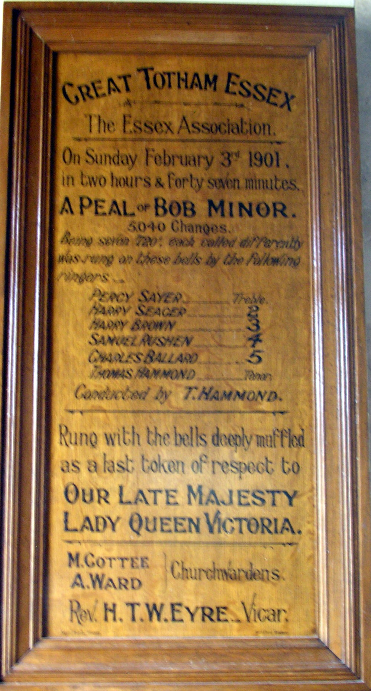
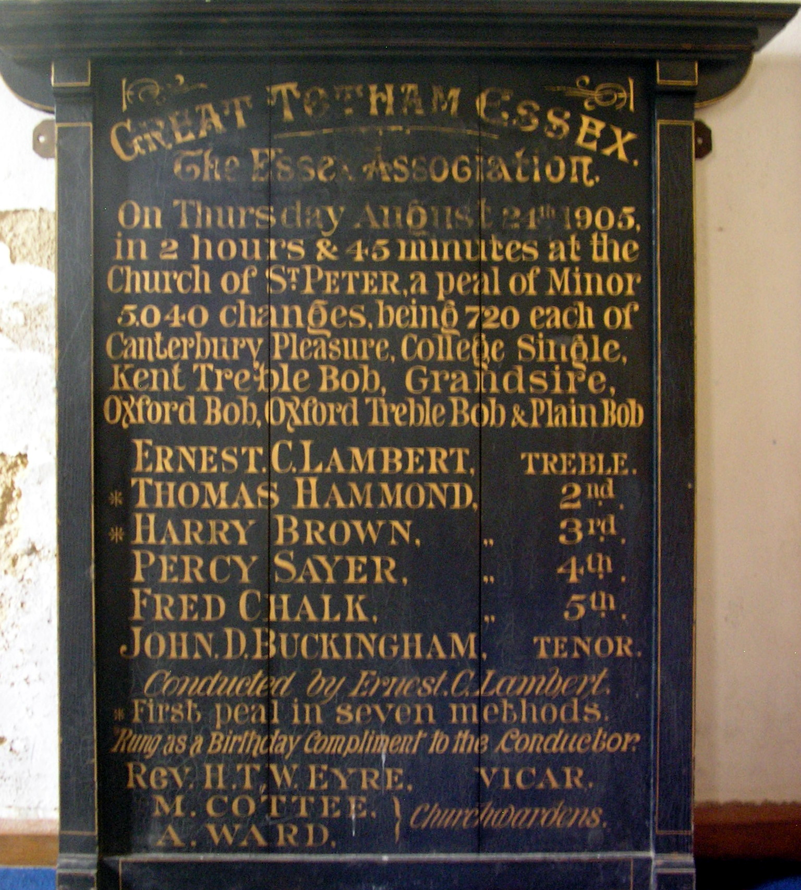
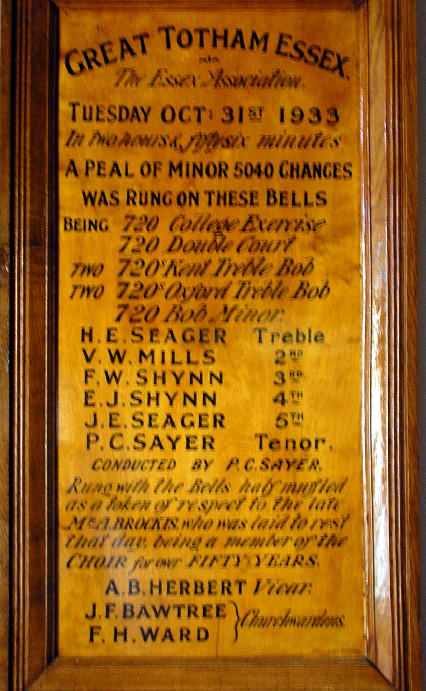
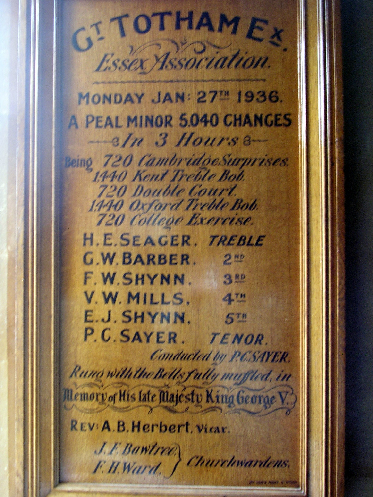
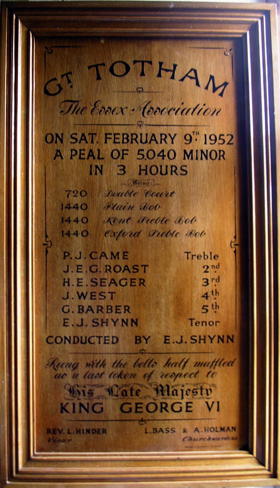
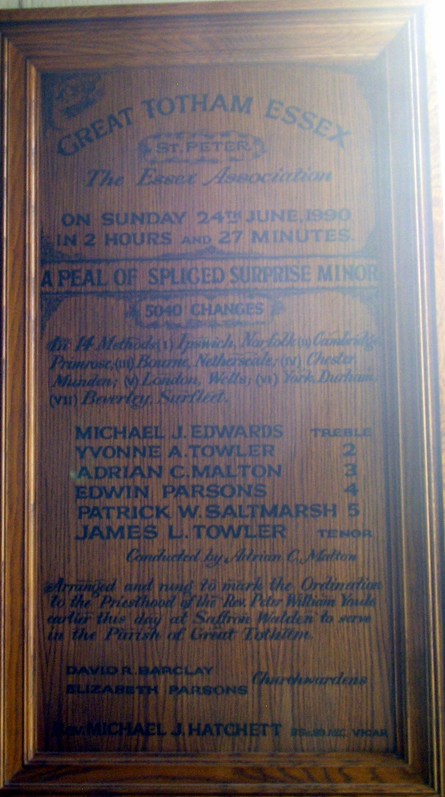
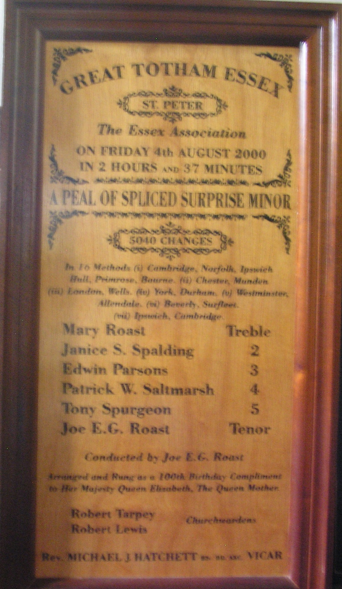
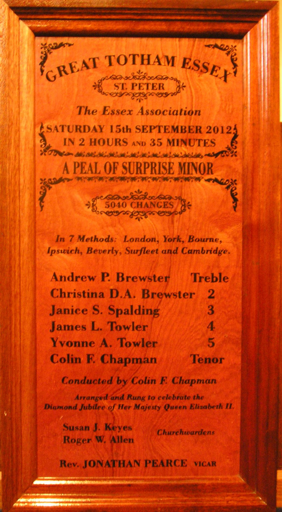

Peals are the gold standard of change ringing — over five thousand sequences, rung continuously without aids, taking the better part of three hours on these bells. Quarter peals are 1,260 changes. Both have a long history at St Peter's.
The Central Council of Church Bell Ringers details the conditions required for a peal. Peals rung on five, six or seven working bells must consist of at least 5,040 changes; for eight or more working bells a peal must comprise a minimum of 5,000 changes. Each bell must be rung continuously by the same person without a break, and the ringing must be done entirely from memory. Peals may be rung to commemorate special occasions and events.
To date, 138 peals have been rung at St Peter's, Great Totham. The first peal was rung on 26th October 1895 by a band from Coggeshall; on 6th May 1899 the first peal was rung by members of the Great Totham band itself. The most recent peal was rung on 2nd November 2014 by six Essex Association ringers — seven Minor Methods, in remembrance of Able Seaman Charles Henry Ballard, the first Essex ringer to fall on 1st November 1914 while serving on HMS Monmouth. He was a loyal ringer at St Peter's.
The Felstead Database records all peals rung but does not include details of the ringers or the occasion.
Ten peal boards hang in the ringing chamber at St Peter's, painted by hand and recording specific peals. Click any board below to see it full-size.










Recorded on cards rather than peal boards. Of particular note is the peal rung on 16th April 1912 — the first peal of Treble Bob on these bells. 5,040 changes, in 2 hours and 42 minutes.
A quarter peal at St Peter's typically takes around 40 minutes. They are rung for special occasions, to mark the progress of a ringer, and for enjoyment. The records below cover quarter peals rung at St Peter's since 2013 with at least one Great Totham ringer in the band — together with details of the bells rung for other significant occasions. Each opens as a PDF.